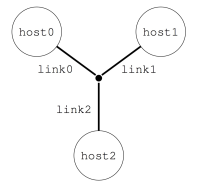
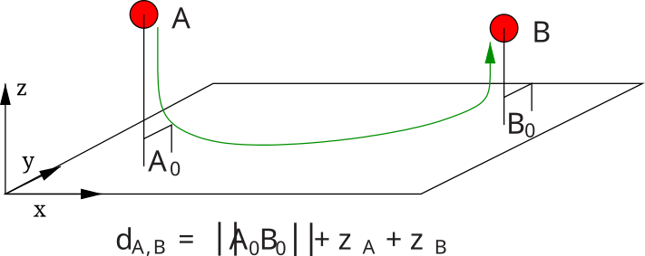
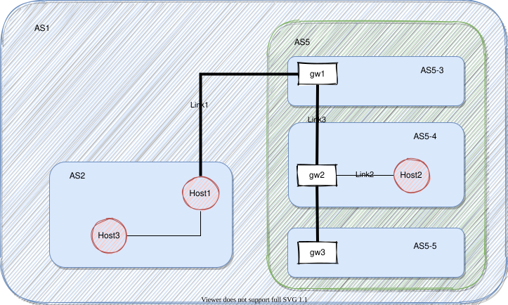

高级路由
SimGrid platforms are divided in networking zones (<zone>) to compose larger platforms from smaller parts. This factorizes the description and improves the simulation performance, both in time and in size. Any zone may contain sub-zones, allowing for a hierarchical decomposition of the platform as depicted in the example below. Inter-zone routes are then factorized with <zoneRoute>.
In addition to the efficiency improvement, multi-zones routing also improve the modeling expressiveness, as each zone can use different models. For example, you can have a coordinate-based routing for the WAN parts of your platform, a full routing within each datacenter, and a highly optimized routing within each cluster of the datacenter. In all cases, SimGrid strives to compute routes in a time- and space-efficient manner.
{kind=link}
{kind=link}
Both images above represent the same platform. On the left, circles represent hosts (i.e. processing units) and squares represent network routers. Bold lines represent communication links. The zone “AS2” models the core of a national network interconnecting a small flat cluster (AS4) and a larger hierarchical cluster (AS5), a subset of a LAN (AS6), and a set of peers scattered around the world (AS7). On the right, the corresponding hierarchy of zones is highlighted.
Routing models
Each zone implements a routing strategy according to the routing attribute of <zone>.
Explicit routing
When routing=full, all routes must be explicitly given using the <route> and <link_ctn> tags.
This routing model is both simple and inefficient :) It is OK to not specify each and every route between hosts, as
long as you do not try to start a communication on any of the missing routes during your simulation.
Shortest path
SimGrid can compute automatically the paths between all pair of hosts in a zone. You just need to provide the one-hop routes to connect all hosts. Several algorithms are provided:
routing=Floyd: use the number of hops to build shortest path. It is calculated only once at the beginning of the simulation.
routing=Dijkstra: shortest-path calculated considering the path’s latency. As the latency of links can change during simulation, it is recomputed each time a route is necessary.
routing=DijkstraCache: Just like the regular Dijkstra, but with a cache of previously computed paths for performance.
Here is a small example describing a star-shaped zone depicted below. The path from e.g. host0 to host1 will be computed automatically at startup. Another way to describe the same platform can be found here, with a full routing and without the central router.
<?xml version='1.0'?>
<!DOCTYPE platform SYSTEM "https://simgrid.org/simgrid.dtd">
<platform version="4.1">
<zone id="my zone" routing="Floyd">
<host id="host0" speed="1Gf"/>
<host id="host1" speed="2Gf"/>
<host id="host2" speed="40Gf"/>
<link id="link0" bandwidth="125MBps" latency="100us"/>
<link id="link1" bandwidth="50MBps" latency="150us"/>
<link id="link2" bandwidth="250MBps" latency="50us"/>
<router id="center"/>
<!-- Only 1-hop routes for topological information. Missing routes are computed with Floyd -->
<route src="center" dst="host0"><link_ctn id="link0"/></route>
<route src="center" dst="host1"><link_ctn id="link1"/></route>
<route src="center" dst="host2"><link_ctn id="link2"/></route>
</zone>
</platform>

Clusters
Clusters constitute a fundamental building bricks of any cyberinfrastructure. SimGrid provides several kinds of clusters: crossbar clusters (contention-free internal network), backbone clusters (constrained internal network), fat-trees, DragonFly, Torus and generic Star clusters. Each of them are created through the <cluster> tag, and have a highly optimized implementation in SimGrid source code.
The documentation of each cluster kinds is given as Network Topology Examples.
Vivaldi
This routing model is particularly well adapted to Peer-to-Peer and Clouds platforms: each component is connected to the cloud through a private link whose upload and download rates may be asymmetric.
The network core (between the private links) is assumed to be over-provisioned so that only the latency has to be taken into account. Instead of a matrix of latencies that would become too large when the amount of peers grows, Vivaldi netzones give a coordinate to each peer and compute the latency between host A=(xA,yA,zA) and host B=(xB,yB,zB) as follows:
latency = sqrt( (xA-xB)² + (yA-yB)² ) + zA + zB
The resulting value is assumed to be in milliseconds.

So, to go from a host A to a host B, the following links would be used: private(A)_UP, private(B)_DOWN, with the
additional latency computed above. The bandwidth of the UP and DOWN links is not symmetric (in contrary to usual SimGrid
links), but naturally correspond to the values provided when the peer was created. See also <peer>.
The script examples/platforms/syscoord/generate_peer_platform.pl in the archive can be used to convert the
coordinate-based platforms from the OptorSim project into SimGrid platform files.
Such Network Coordinate systems were shown to provide rather good latency estimations in a compact way. Other systems, such as Phoenix network coordinates were shown superior to the Vivaldi system and could be also implemented in SimGrid.
Here is a small platform example:
<?xml version='1.0'?>
<!DOCTYPE platform SYSTEM "https://simgrid.org/simgrid.dtd">
<platform version="4">
<zone id="zone0" routing="Vivaldi">
<peer id="peer-0" coordinates="173.0 96.8 0.1" speed="730Mf" bw_in="13.38MBps" bw_out="1.024MBps" lat="500us"/>
<peer id="peer-1" coordinates="247.0 57.3 0.6" speed="730Mf" bw_in="13.38MBps" bw_out="1.024MBps" lat="500us" />
<peer id="peer-2" coordinates="243.4 58.8 1.4" speed="730Mf" bw_in="13.38MBps" bw_out="1.024MBps" lat="500us" />
</zone>
</platform>
Wi-Fi
Please see WiFi zones.
ns-3
When using ns-3 as a SimGrid model, SimGrid configures the ns-3 simulator according to the configured platform. Since ns-3 uses a shortest path algorithm on its side, all routes must be of length 1.
Describing routes
If you want to define a route within a given zone, you simply have to use the <route> tag, providing the
src, dst parameters along with the list of links to use from src to dst.
Defining a route between two separate zones with <zoneRoute> takes more parameters: src, dst,
gw_src (source gateway) and gw_dst (destination gateway) along with the list of links. Afterward, the path from
src_host in zone src to dst_host in zone dst is composed of 3 segments. First, move within zone src from
src_host to the specified gateway gw_src. Then, traverse all links specified by the zoneRoute (purportedly within
the common ancestor) and finally, move within zone dst from gw_dst to dst_host.
SimGrid enforces that each gateway is within its zone, either directly or in a sub-zone to ensure that the algorithm described in the next section actually works.
One can also use <bypassRoute> and <bypassZoneRoute> to define exceptions to the classical routing algorithm. This advanced feature is also detailed in the next section.
Calculating network paths
Computing the path between two hosts is easy when they are located in the same zone. It is done directly by the routing algorithm of that zone. Full routing looks in its table, Vivaldi computes the distance between peers, etc.
Another simple case is when a <bypassRoute> was provided. Such routes are used in priority, with no further routing computation. You can define a bypass between any hosts, even if they are not in the same zone.
When communicating through several zones, a recursive algorithm is used. As an illustration, we will apply this
algorithm to a communication between host1 in AS1 and host2 in AS5-4, in our previous topology. This section
only gives an overview of the algorithm used. You should refer to the source code for the full details, in
NetZoneImpl::get_global_route(), and to this publication.

Find common ancestor zone of
srcanddst, the ancestors ofsrcanddstand how they are connected.In our case, AS1 is the common ancestor while AS2 and AS5 are the respective ancestors of
srcanddst. Assume that the relevant route was defined as follows:<zoneRoute src="AS2" dst="AS5" gw_src="Host1" gw_dst="gw1"> <link_ctn id="Link1"/> </zoneRoute>
Add the route up to the ancestor, i.e. from
srcto thegw_srcin the route between ancestor zones. This is a recursive call to the current algorithm.That’s easy in our case, as both
srcandgw_srcare Host1, so that route segment is empty. If we were to compute the path from Host3 to Host2, we would have to add the route from Host3 to the gateway that is Host1Add the zoneRoute between ancestors.
From the XML fragment above defining the zoneRoute between AS2 and AS5, we need to add
Link1to the path.Add the route down from the ancestor, i.e. from
gw_dsttodstin the route between ancestor zones. This is another recursive call to the current algorithm.Here, we need the route from gw1 and host2. The common ancestor is AS5, and the relative ancestors are AS5-4 and AS5-3. This route is defined as follows (routes are symmetrical by default).
<zoneRoute src="AS5-4" dst="AS5-3" gw_src="gw2" gw_dst="gw1"> <link_ctn id="Link3"/> </zoneRoute>
So to compute the route from gw1 to Host2, we need to add:
the route from the source to the gateway, i.e. from gw1 to gw1 (empty route segment),
the links listed in the zoneRoute (Link3)
the route from the gateway to the destination, i.e. from gw2 to Host2 (they are in the same zone AS5-4, and that path is limited to Link2). The last segment is because of the following fragment:
<route> src="Host2" dst="gw2"> <link_ctn id="Link2"> </route>
In the end, our communication from Host1@AS2 to Host2@AS5-4 follows this path: {Link1, Link3, Link2}
It is possible to use <bypassZoneRoute> to provide a path between two zones that are not necessarily sibilings. If such routes exist, SimGrid will try to match each of the ancestor zones of the source with each of the ancestor zone of the destination, looking for such a bypass to use intead of the common ancestor.
Loopback links
Loopback links are used when from an host to itself (they are excluded in the recursive search described above). As it can be quite tedious to describe each a loopback link for each host in the platform, SimGrid provides a default global FATPIPE link which is used by all hosts. Its bandwidth is 10GBps while its latency is 0ms, but these arbitrary values should changed through configuration to reflect your environment (see Configuring loopback link).
To give a specific loopback link to a given host, simply a add <route> from this node to itself. SimGrid will then use the provided link(s) as a loopback for this host instead of the global one.
<link id="loopback" bandwidth="100MBps" latency="0"/>
<route src="Tremblay" dst="Tremblay">
<link_ctn id="loopback"/>
</route>
Some zones such as <cluster> provide ways to describe the characteristics of the loopback nodes inside the zone.